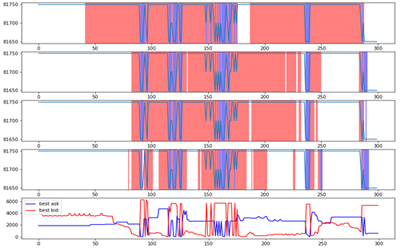
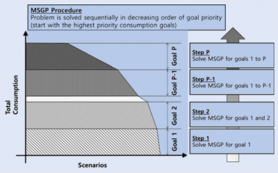
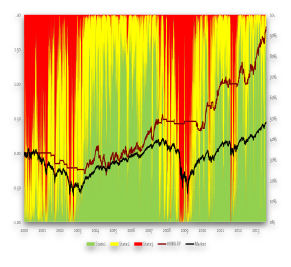

Research Area
AI for Finance

Attempts to integrate machine-learning techniques to the problems
in financial domain has been widely done in both the industry
and the academia. Among the machine-learning technologies,
we focus on deep reinforcement learning which is efficient in
solving sequential decision making problems under complex states.
For the shortest time-frame of trading, we are trying to develop
an optimal high-frequency trading policy by training the dynamics
of the limit order books. For longer time-frame of investing,
we are in progress to solve portfolio optimization under various
constraints with deep reinforcement learning.
Sample paper: "Extended Framework for Deep Reinforcement
Learning Applied to High-Frequency Trading" [working paper]
FinTech

Due to the limited human resources in the financial sector, asset
management services have been offered only to the riches in the form
of private banking service. Through technology, the domain of
FinTech aims to provide these expensive financial services to
the public at low cost.
With this motivation in mind, we have developed a personalized
life-cycle goal-based investment service.
With the research as a starting point, we are currently trying to
increase the scalability of our solution, which is, to solve
the problem with lower computational cost in a faster manner.
Sample paper: "Personalized Goal-Based Investment via Multi-Stage
Stochastic Goal Programming" [link]
Investment Management

Another key research area is investment management. We aim to
develop quantitative technologies that can improve investment
performance. The main efforts have been spent on modeling
uncertainties as well as obtaining optimal investment decisions
based on such uncertainty models.
Sample paper: "Dynamic Asset Allocation for Varied Financial
Markets under Regime Switching Framework" [link]
Financial Optimization

Optimization plays a central role in financial decision making.
We study various financial optimization problems such as robust
optimization, stochastic programming, dynamic programming
from the perspective of optimal decision making under uncertainty.
Sample paper: "Deciphering Robust Portfolios" [link]
Publications
Books
2015
- Woo Chang Kim, Jang Ho Kim, and Frank J. Fabozzi (2015), “Robust Equity Portfolio Management + Website: Formulations, Implementations, and Properties using MATLAB”, Wiley [Amazon link]
Refereed Journal Papers
2023
- Hyunglip Bae, Jinkyu Lee, Woo Chang Kim, and Yongjae Lee (2023) "Deep Value Function Networks for Large-Scale Multistage Stochastic Programming Problems", 26th International Conference on Artificial Intelligence and Statistics (AISTATS 2023). Accepted.
- Hyeongwoo Kong, Wonje Yun, and Woo Chang Kim (2023) "Tracking customer risk aversion", Finance Research Letters.
- Insu Choi, Myounggu Lee, Hyejin Kim, and Woo Chang Kim (2023) "Unraveling Directed Statistical Dependencies: Investigating Global Financial Market Indices' Influence on Korean Short Selling Activities", Pacific-Basin Finance Journal.
2022
- Jang Ho Kim, Yongjae Lee, Woo Chang Kim, and Frank J. Fabozzi (2022) "Goal-Based Investing Based on Multi-Stage Robust Portfolio Optimization", Annals of Operations Research. [full paper]
- Insu Choi, Jihye Kim, and Woo Chang Kim (2022) "Dietary Pattern Extraction Using Natural Language Processing Techniques", Frontiers in Nutrition, 281. [full paper]
- Insu Choi and Woo Chang Kim (2022) “Analyzing and Utilizing Thematic Stocks based on Text Mining Techniques and Information Flow-Based Networks – An Example of the Republic of Korea’s Mask-Themed Stocks”, Industrial Engineering and Management Systems, 21(2), 244-266. [full paper]
- Munki Chung, Yongjae Lee, Jang Ho Kim, Woo Chang Kim and Frank J. Fabozzi (2022) “The effects of errors in means, variances, and correlations on the mean-variance framework”, Quantitative Finance, [full paper]
- Insu Choi and Woo Chang Kim (2022) “정보 흐름 네트워크를 활용한 국제 금융 시장 지수의 분석 및 국내 시장 지수 등락 예측”, 대한산업공학회지, 48(4), 340-355.
- Jinkyu Lee, Sanghyeon Bae, Woo Chang Kim, and Yongjae Lee (2022) “Value Function Gradient Learning for Large-Scale Multistage Stochastic Programming Problems”, European Journal of Operational Research,[full paper]
- Insu Choi*, Woosang Lim*, Doyoung Lee*, Minseok Kim*, Taechan Ahn*, and Woo Chang Kim (2022) “미국 시장에서의 암호화폐 ETF 도입 가능성 분석: 시스템 리스크와 평균-분산 포트폴리오 이론의 관점에서”, 대한산업공학회지, 48(5), 509-518.
- Guhyuk Chung, Munki Chung, Yongjae Lee, and Woo Chang Kim (2022) “Market Making under Order Stacking Framework: A Deep Reinforcement Learning Approach”, ICAIF '22: 3rd ACM International Conference on AI in Finance.
- Insu Choi, Wonje Yun, and Woo Chang Kim (2022) "Improving Data Efficiency for Analyzing Global Exchange Rate Fluctuations Based on Nonlinear Causal Network-Based Clustering", Annals of Operations Research , [full paper]
- Hyeongwoo Kong, Wonje Yun, Weonyoung Joo, Ju-Hyun Kim, Kyoung-Kuk Kim, Il-Chul Moon, and Woo Chang Kim (2022) "Constructing a personalized recommender system for life insurance products with machine-learning techniques", Intelligent Systems in Accounting, Finance and Management
2021
- Woong Bee Choi, Dongyeol Lee, and Woo Chang Kim (2021) "Extending the Scope of ALM to Social Investment: Investing in Population Growth to Enhance Sustainability of the Korean National Pension Service", Sustainability 13.1, (2021): 401. [full paper]
- Jang Ho Kim, Yongjae Lee, Jaekyu Bae, and Woo Chang Kim (2021) "Recent Trends and Perspectives on the Korean Asset Management Industry", Journal of Portfolio Management, [full paper]
- Insu Choi and Woo Chang Kim (2021) "Detecting and Analyzing Politically-Themed Stocks Using Text Mining Techniques and Transfer Entropy - Focus on the Republic of Korea's Case". Entropy, 23(6), 734; [full paper].
- Jang Ho Kim, Woo Chang Kim, and Frank J. Fabozzi (2021), "Sparse Factor Model Based on Trend Filtering", Annals of Operations Research, Published online [full paper]
- Jang Ho Kim, Yongjae Lee, Woo Chang Kim, and Frank J. Fabozzi (2021), "Mean-Variance Optimization for Asset Allocation", Journal of Portfolio Management, 47(5), 24-40 [full paper]
- Dongyeol Lee and Woo Chang Kim (2021), "Cost of Shareholder Engagement by Institutional Investors under Short-Swing Profit Rule", Finance Research Letters, 40, 101700 [full paper]
2020
- Insu Choi, Sookyun Park, Younghwan Cho, Chaeyeon Lee, Awon Kim and Woo Chang Kim (2020) “도서 정보 및 도서 리뷰 데이터를 활용한 독서 수준 기반의 추천 모형 개발”, 대한산업공학회지, 46(3), pp. 179-189. [full paper]
- Yongjae Lee, Min Jeong Kim, Jang Ho Kim, Ju Ri Jang, and Woo Chang Kim (2020), “Sparse and Robust Portfolio Selection via Semi-Definite Relaxation”, Journal of the Operational Research Society, 71(5), 687-699[full paper]
- Yongjae Lee, Woo Chang Kim, and Jang Ho Kim (2020), “Achieving Portfolio Diversification for Individuals with Low Financial Sustainability”, Sustainability, 12(17), 7073[full paper]
- Woo Chang Kim, Do Gyun Kwon, Yongjae Lee, Jang Ho Kim, and Changle Lin (2020), "Personalized Goal-based Investment via Multi-Stage Stochastic Goal Programming”, Quantitative Finance, 20(3), 515-526[full paper]
- Dongyeol Lee, Sangyeon Kim, Chong Hyun Won, and Woo Chang Kim (2020) "완전적립식 국민연금 재정 달성 가능성 분석", 대한산업공학회지, 46 (1) [full paper]
2019
- Sungmin Jang, Eojin Yi, Woo Chang Kim, and Kwangwon Ahn (2019) "Information Flow between Bitcoin and Other Investment Assets", Entropy, 21(11), 1116. [full paper]
2018
- Yongjae Lee, and Woo Chang Kim (2018), "Why Your Smart Beta Portfolio Might Not Work," International Journal of Financial Engineering and Risk Management, 2(4), 351-362
- Jang Ho Kim, Woo Chang Kim, Do Gyun Kwon, and Frank J. Fabozzi (2018), "Robust Equity Portfolio Performance," Annals of Operations Research, 266(1-2), 293-312
- Koray D. Simsek, Min Jeong Kim, Woo Chang Kim, and John M. Mulvey (2018), “Optimal Longevity Risk Management in the Retirement Stage of the Life Cycle”, Journal of Retirement, 5 (3), 73-92 ((Appeared in Special Issue on Pension and Longevity Risk Transfer, Investment Guides, 2017, 66-86 & Also appeared in The Journal of Investing, 2018, 27 (supplement) 38-57)
- Jang Ho Kim, Woo Chang Kim, and Frank J. Fabozzi (2018), “Recent Advancements in Robust Optimization for Investment Management”, Annals of Operations Research, 266(1-2), 183-198
2017
- Jang Ho Kim, Woo Chang Kim, Do Gyun Kwon, and Frank J. Fabozzi (2017) "Robust Equity Portfolio Performance", Annals of Operations Research, 2017 1-20 [full paper]
- Beom Hyun Kim, Yongjae Lee, Do Gyun Kwon, and Woo Chang Kim (2017) "한국 ETF 시장의 시스템적 리스크 분석 및 최적의 ETF 도입 순서에 대한 연구 (A Study on the Korean ETF market: Systemic Risk and the Optimal ETF Introduction Sequence)," 대한산업공학회지, 43(6), 482-491 [full paper]
- Jang Ho Kim, Woo Chang Kim, and Frank J. Fabozzi (2017), “Robust Factor-Based Investing”, Journal of Portfolio Management, 43(5), 157-164 [full paper]
- Jang Ho Kim, Woo Chang Kim, and Frank J. Fabozzi (2017) "Penalizing for Higher Dependency on Factors," Quantitative Finance, 17(4), 479-489 [full paper]
- Do Gyun Kwon, Jang Ho Kim, Yongjae Lee, and Woo Chang Kim (2017) "Modeling the Dynamics of Institutional, Foreign, and Individual Investors through Price Consensus," International Review of Financial Analysis, 49, 166-175 [full paper]
2016
- Dongyeol Lee, Woongbee Choi, and Woo Chang Kim (2016) "국민연금의 세대내 세후 소득재분배 효과 분석 (An Analysis on the Intra-generational After-tax Income Redistribution Effect of the National Pension Scheme)," 사회보장연구, 32(3), 159-174 [full paper]
- Jang Ho Kim, Woo Chang Kim, and Frank J. Fabozzi (2016) "Portfolio Selection with Conservative Short-selling," Finance Research Letters, 18, 363-369 [abstract] [full paper]
- Min Jeong Kim, Yongjae Lee, Jang Ho Kim, and Woo Chang Kim (2016) "Sparse Tangent Portfolio Selection via Semi-Definite Relaxation," Operations Research Letters, 44(4), 540-543 [abstract] [full paper]
- Woo Chang Kim, and Yongjae Lee (2016) "A Uniformly Distributed Random Portfolio," Quantitative Finance, 16(2), 297-307 [abstract] [full paper]
- John M. Mulvey, Woo Chang Kim, and Changle Lin (2016) “Optimizing a Portfolio of Liquid and Illiquid Assets”, in Optimal Financial Decision Making Under Uncertainty, G.Consigli, D.Kuhn, and P.Brandimarte (eds.), International Series in Operations Research and Management Science, Springer, 151-175
2015
- Min Jeong Kim, Woong Bee Choi, and Woo Chang Kim (2015) "신탁기금 운용의 관점에서 평가한 국민연금기금의 사회적 투자 수익률 (Return of Social Investment of the National Pension Fund From the Perspective of Trust Fund)," 사회복지정책 (Social Welfare Policy), 42(1), 211-238 [full paper]
- Woo Chang Kim, Jang Ho Kim, John M. Mulvey, and Frank J. Fabozzi (2015) "Focusing on the Worst State for Robust Investing," International Review of Financial Analysis, 39, 19-31 [abstract] [full paper]
2014
- Woo Chang Kim, Jang Ho Kim, and Frank J. Fabozzi (2014) "Deciphering Robust Portfolios," Journal of Banking and Finance, 45, 1-8 [abstract] [full paper]
- Woo Chang Kim, Yongjae Lee, and Yoon Hak Lee (2014) "Cost of Asset Allocation in Equity Market - How Much Do Investors Lose Due to Bad Asset Class Design?," Journal of Portfolio Management, 41(1), 34-44 [abstract] [full paper]
- Jang Ho Kim, Woo Chang Kim, and Frank J. Fabozzi (2014) "Recent Developments in Robust Portfolios with a Worst-Case Approach," Journal of Optimization Theory and Applications, 161(1), 103-121 [abstract] [full paper]
- Woo Chang Kim, Frank J. Fabozzi, Patrick Cheridito, and Charles Fox (2014) "Controlling Portfolio Skewness and Kurtosis without Directly Optimizing Third and Fourth Moments," Economics Letters, 122, 154-158 [full paper]
- Geum Il Bae, Woo Chang Kim, and John M. Mulvey (2014) "Dynamic Asset Allocation for Varied Financial Markets under Regime Switching Framework," European Journal of Operational Research, 234(2), 450-458 [abstract] [full paper]
- Woo Chang Kim, Min Jeong Kim, Jang Ho Kim, and Frank J. Fabozzi (2014) "Robust Portfolios That Do Not Tilt Factor Exposure," European Journal of Operational Research, 234(2), 411-421 [abstract] [full paper]
2013
- John M. Mulvey, Thomas Nadbielny, and Woo Chang Kim (2013), "Levered Exchange Traded Products: Theory and Practice," Journal of Financial Perspectives, 1, 105-119 [full paper]
- Jang Ho Kim, Woo Chang Kim, and Frank J. Fabozzi (2013) "Composition of Robust Equity Portfolios," Finance Research Letters, 10, 72-81 [abstract] [full paper]
- Woo Chang Kim and Je-Hyuk Lee (2013) "Characteristics of Robust Portfolios in a Varied Asset Universe," Quantitative Finance Letters, 1, 18-28 [abstract] [full paper]
- Yongjae Lee and Woo Chang Kim (2013) "A Stochastic Model for Order Book Dynamics: An Application to Korean Stock Index Futures," Management Science and Financial Engineering, 19(1), 37-41 [abstract] [full paper]
- Woo Chang Kim, Jang Ho Kim, So Hyoung Ahn, and Frank J. Fabozzi (2013) "What Do Robust Equity Portfolio Models Really Do?," Annals of Operations Research, 205, 141-168 [abstract] [full paper]
- 2012
- Do Gyun Kwon, Hee Hwan Park, Dong Hun Kang, and Min Jeong Kim (2012) "한국 헤지펀드 시장의 최적의 투자전략 도입순서에 대한 연구," 대한산업공학회지, 38, 254-257 [full paper]
- Woo Chang Kim (2012) "Regime 탐지 분석을 이용한 동적 자산 배분 기법," 대한산업공학회지, 38(4), 258-261 [full paper]
- John M. Mulvey, Woo Chang Kim, and Yi Ma (2010) "Duration-Enhancing Overlay Strategies for Defined-Benefit Pension Plans," Journal of Asset Management, 11, 136-162 [abstract] [full paper]
- Woo Chang Kim and John M. Mulvey (2009) "Evaluating Style Investment," Quantitative Finance, 9, 637-651 [abstract] [full paper]
- John M. Mulvey, and Woo Chang Kim (2008) "Improving Equity Diversification via Industry-Wide Market Segmentation," Journal of Financial Transformation, 22, 59-65 [abstract] [full paper]
- John M. Mulvey, and Woo Chang Kim (2008) "Active Equity Managers in the U.S.: Do the "Best" Follow Momentum Strategies?," Journal of Portfolio Management, 34, 126-134 [abstract] [full paper]
Other Refereed Papers
- Guseon Ji, Hyeongwoo Kong, Woo Chang Kim, & Kwangwon, Ahn. (2020, June). Stochastic volatility and early warning indicator. In International Conference on Computational Science (pp. 413-421). Springer, Cham.
- Mulvey, John M., Woo Chang Kim, and Changle Lin (2016) "Optimizing a Portfolio of Liquid and Illiquid Assets," in Optimal Financial Decision Making Under Uncertainty, G.Consigli, D.Kuhn, and P.Brandimarte (eds.), International Series in Operations Research and Management Science, Springer, to appear
- Woo Chang Kim, Mulvey J.M., Simsek K.D., and Min Jeong Kim (2013) "Longevity Risk Management for Individual Investors", in Stochastic Programming - Applications in Finance, Energy, Planning and Logistics: Proceeding of 12th International Conference on Stochastic Programming (17 articles chosen from 160+ papers presented at 12th ICSP, Leading article), World Scientific, 9-42 [abstract] [full paper]
- Mulvey, John M., and Woo Chang Kim (2010) "Constantly Rebalanced Portfolio? Is Mean-Reverting Necessary?," in Encyclopedia of Quantitative Finance, R.Cont (eds.), John Wiley & Sons Ltd. [abstract] [full paper]
- Mulvey, John M., and Woo Chang Kim (2010) "Multi-Stage Financial Planning Models: Integrating Stochastic Programs and Policy Simulators," in Stochastic Programming: The State of the Art, G.Infanger (eds.), Springer, 257-276 [abstract] [full paper]
- Mulvey, John M., and Woo Chang Kim, and Mehmet Bilgili (2009) "Linking Momentum Strategies with Single-Period Portfolio Models," in Handbook of Portfolio Construction: Contemporary Applications of Markowitz Techniques, J.Guerard (eds.), Springer, 511-528 [abstract] [full paper]
- Mulvey, John M., and Woo Chang Kim (2008) "The Role of Alternative Assets in Portfolio Construction," in Encyclopedia of Quantitative Risk Analysis and Assessment, B.Everitt, and E.Melnick (eds.), John Wiley and Sons, Ltd. [abstract] [full paper]
- Mulvey, John M., and Woo Chang Kim (2007) "What Causes the Volatility Asymmetry? - A Clue to the Volatility Puzzle," Proceedings of Korean Security Association Conference 2007 [abstract] [full paper]
Non-Refereed Papers
- Woo Chang Kim (2015) “핀테크 산업과 산업공학의 역할 (FinTech Industry and Roles of Industry Engineering)”, IE Magazine, 22(4), 7-9 [full paper]
- Geum Il Bae, Yongjae Lee, Jieun Kim, Woo Chang Kim, Min Jeong Kim, and Jang Ho Kim (2015) "Anatomy of Robo-Advisor: 적용기술의 타당성을 중심으로," IE Magazine, 22(4), 28-36 [full paper]
- Yongjae Lee, and Woo Chang Kim (2014) "Concise Formulas for the Surface Area of the Intersection of Two Hyperspherical Caps," KAIST Technical Report, IE-TR-2014-01 [full paper]
- Do-gyun Kwon, Min Jeong Kim, Jang Ho Kim, Yongjae Lee, Yoon Hak Lee, and Woo Chang Kim (2011) "과거에 발생한 금융 사고들의 사례 연구를 통한 원인 분석과 방지책 마련," KAIST Technical Report
- Hongseok Namkoong, and Woo Chang Kim (2011) "Concurrent Relations of Commodity Futures: Its Predictive Ability on Spot Price Dynamics," KAIST Technical Report
- Mulvey, John M., Woo Chang Kim, and Bilgili, M. (2008) "Dynamic Investment Strategy and Rebalancing Gains," in Euromoney Algorithmic Trading Handbook 2007/08, Euromoney Institutional Investor PLC, 61-63 [full paper]
Select Presentations
-
2022
- Sanghyeon Bae and Woo Chang Kim (2022). "Optimal portfolio choice of couples with tax deferred accounts and survival contingent products. 2022 European Conference on Stochastic Optimization Computational Management Science.
- Insu Choi and Woo Chang Kim (2022). Development of a Commodity Futures Portfolio Optimization Framework Using the Topology of Nonparametric Dependency and Causality Networks. 2022 Summer Conference of the Korean Statistical Society. Seoul, Republic of Korea, June 2022.
- Insu Choi, Lee, J., Cho, Y., Choi, H., and Woo Chang Kim (2022). An Analysis of the Information Flow of Thematic Cryptocurrencies and Tokens Using Transfer Entropy and Network Topology. 2022 Spring Conference of the Korea Intelligent Information Systems Society. Daegu, Republic of Korea, June 2022.
- Insu Choi and Woo Chang Kim (2022). Predicting Fluctuations Based on Nonlinear Network Using Return Data of Global Financial Market Indices. 2022 Korean Economic Association 70th Anniversary International Conference. Seoul, Republic of Korea, June 2022.
- Insu Choi and Woo Chang Kim (2022). Developing and Applying the Information Flow Network of Global Financial Markets’ Entropic Value-at-Risk (EVaR). 2022 Annual Conference of the Korea Money and Finance Association. Seoul, Republic of Korea, June 2022.
- Insu Choi, Ji Hye Kim, and Woo Chang Kim (2022). Ameliorating the Dyslipidemia Prediction Results Using Natural Language Processing-Based Indicators. 2022 Spring Conference of Korean Institute of Information Technology. Jeju, Republic of Korea, June 2022.
- Munki Chung, Yongjae Lee, and Woo Chang Kim (2022). The Effects of Errors in Means, Variances, and Correlations on the Mean-Variance Framework. 2022 Spring Conference of Korean Institute of Information Technology. Jeju, Republic of Korea, June 2022.
- Chanyeong Kim and Woo Chang Kim (2022). Deep Reinforcement Learning for High-Frequency Pairs Trading. 2022 Spring Conference of Korean Institute of Information Technology. Jeju, Republic of Korea, June 2022.
- Insu Choi and Woo Chang Kim (2022). Financial Crisis-Based Analysis of Machine Learning Models on Binary Classification Problems Using Global Financial Market Return Data. 2022 Spring Conference of Korean Institute of Information Technology. Jeju, Republic of Korea, June 2022.
- Insu Choi*, Minseok Kim*, Woosang Lim*, Doyoung Lee*, Taechan Ahn*, and Woo Chang Kim (2022). Analyzing the Possibility of Incorporating Cryptocurrency ETF Into the Korean Financial Market: From the Perspective of Systemic Risk and Mean-Variance Portfolio Theory. 2022 Spring Conference of Korean Institute of Information Technology. Jeju, Republic of Korea, June 2022.
- Insu Choi , Jiyoung Yoo, Soyeong Lim, Jueun Hong, Minyoung Park, and Woo Chang Kim (2021). Illustrating Research Trends and Constructing an Information Theory-Based Network of the Energy Futures Market. 2022 Joint Spring Conference of the Korean Institute of Industrial Engineers and Korean Operations Research and Management Science Society. Jeju, Republic of Korea, June 2022.
- Wonje Yun, Insu Choi, and Woo Chang Kim (2022). Comparison Between Correlation and Causality Networks and its Community Detection Results: Focus on the Stock Price Index of Republic of Korea. 2022 Joint Spring Conference of the Korean Institute of Industrial Engineers and Korean Operations Research and Management Science Society. Jeju, Republic of Korea, June 2022.
- Haeun Jeon, Insu Choi, and Woo Chang Kim (2022). Why Was My Loan Rejected and What Should I Do?. 2022 Joint Spring Conference of the Korean Institute of Industrial Engineers and Korean Operations Research and Management Science Society. Jeju, Republic of Korea, June 2022.
- Insu Choi and Woo Chang Kim (2022). Developing an Entropic Drawdown-at-Risk (EDaR) Fluctuation Forecasting Model for Commodity Futures Market Using Entropy-Based Dependency and Causality Network Modularity. 2022 Annual Spring Conference of Korean Information Processing Society (ASK 2022). Seoul, Republic of Korea, May 2022.
- Insu Choi*, Hyemin Ju*, Eunhye Yang*, Seungwoo Han*, and Woo Chang Kim (2022). Anticipating Bitcoin Price Fluctuation Based on a Sentiment Analysis-Driven Indicator and Macro-Economic Data. 2022 Annual Spring Conference of Korean Information Processing Society (ASK 2022). Seoul, Republic of Korea, May 2022.
- Insu Choi, Ji Hye Kim, and Woo Chang Kim (2022). Improving Obesity Prediction Through Sentiment Analysis and Topic Modeling Results Using Korea National Health and Nutrition Examination Survey (KNHANES) Data. 2022 Spring Conference of Korean Institute of Intelligent Systems. Anseong, Gyeonggi-do, Republic of Korea, May 2022.
- Insu Choi and Woo Chang Kim (2022). A Study on the Linear and Non-linear Financial Market Networks Based on the Empirical Characteristics of the Global Financial Market Return Distributions. 2022 Spring Conference of the Korean Data and Information Science Society. Busan, Republic of Korea, May 2022.
- Insu Choi, Ji Hye Kim, and Woo Chang Kim (2022). Deriving Main Trends in Dietary Patterns of Korean Adults Using Natural Language Processing Techniques Using Korea National Health and Nutrition Examination Survey (KNHANES) Data. 2021-22 Korea Advanced Institute of Science and Technology AI Workshop. Daejeon, Republic of Korea, January 2022.
-
2021
- Insu Choi, Wonje Yun, and Woo Chang Kim. Forecasting Exchange Rate Fluctuations Using Nonlinear Causal Network Analysis and Deep Learning Techniques. 2021 Korean Association of Financial Engineering and Sungkyunkwan University International Conference of Finance. Seoul, Republic of Korea, December 2021.
- Insu Choi and Woo Chang Kim. Developing a Cryptocurrency Price Prediction Model Using Complex Network Analysis and Cryptocurrency Sentiment Index Derived from Transformer-Based Models. 2021 Joint Winter Conference of the International Society for Innovation Cluster, Korea Technology Innovation Society, and Korea Society for Innovation Management and Economics. Online, December 2021.
- Insu Choi and Woo Chang Kim. Developing an Explainable Financial Market Indices Prediction Model Using the Information Flow-Based Causal Network and Shapley Additive Explanations (SHAP) Interaction Values. 2021 Fall Conference of the Korea Intelligent Information Systems Society. Online, December 2021.
- Insu Choi, Dalli Nam., and Woo Chang Kim. Designing a Reinforcement Learning-Based Investment Model Using Environmental, Social, and Governance (ESG) Indicators and Fundamental, Technical, and Sentimental Analysis Results Based on the Decision-Making Process Derived from Causality Measures and Explainable Artificial Intelligence Techniques. 2021 Fall Conference of the Korean Data and Information Science Society. Seoul, Republic of Korea, November 2021.
- Insu Choi and Woo Chang Kim. Metaverse and Non-Fungible Token Buying Surge in 2021 – Price Prediction Model of Non-Fungible Token-Related Cryptocurrencies and Stocks Based on the Sentiment Analysis and Causal Network Analysis. 2021 Fall Conference of Knowledge Management Society Korea, Online, November 2021.
- Insu Choi and Woo Chang Kim. A Legal Tender-Based Gold Price Prediction Model Based on Transfer Entropy, Network Clustering Algorithms, and Machine Learning Techniques. 2021 Fall Conference of the Korean Operations Research and Management Science Society, Seoul, Republic of Korea, November 2021.
- Insu Choi and Woo Chang Kim. Predicting the Korean Stock Market Indices Using Macroeconomic Indicators and Causality Measures and Analyzing Important Features Using Explainable Artificial Intelligence Techniques. 2021 Fall Conference of the Korean Society of Management Consulting. Seoul, Republic of Korea, November 2021.
- Insu Choi and Woo Chang Kim. Politically-Themed Stocks Revisited: Analyzing Politically-Themed Stocks Using Natural Language Processing Techniques, Information Theory, and Complex Network Dynamics. 17th Korea Institute of Industrial Engineers Master Thesis Competition, Seoul, Republic of Korea, November 2021.
- Insu Choi, Dalli Nam., Minjin Koo, Youkyoung Kong, Soyoung Lim, and Woo Chang Kim. Current Status of Global Environmental, Social, and Governance (ESG) Investment Paradigm Shift and Related Major Research. 2021 Fall Conference of the Korean Institute of Industrial Engineers, Seoul, Republic of Korea, November 2021.
- Insu Choi, Dalli Nam., Tae Kyoung Kim, Doyoung Lee, Hyemin Joo, and Woo Chang Kim. Trend Analysis of Sustainable Service Models of Global Companies Combined with FinTech, TechFin, and Environmental, Social, and Governance (ESG) Management: A Multiple Case Study. 2021 Fall Conference of the Korean Institute of Industrial Engineers, Seoul, Republic of Korea, November 2021.
- Insu Choi, Dalli Nam., Hyun Kim, Minjin Koo, Tae Kyoung Kim, Jaeyoung Kim, Soyoung Lim, and Woo Chang Kim. Empirically Analyzing the Importance of Environmental, Social, and Governance (ESG) Interests and Indicators for Forecasting Stock Prices in the Manufacturing and Logistics Industry Using Linear and Nonlinear Causality Measures and Explainable Artificial Intelligence Techniques. 2021 Fall Conference of the Korean Institute of Industrial Engineers, Seoul, Republic of Korea, November 2021.
- Insu Choi, Dalli Nam., and Woo Chang Kim. Developing a Sustainable Portfolio Using Environmental, Social, and Governance (ESG) and Human Capital Concept – Focus On the Republic of Korea’s Case. 2021 Fall Conference of the Korean Institute of Industrial Engineers, Seoul, Republic of Korea, November 2021.
- Insu Choi, Sangjae Lee, Yejin Han, Soyoung Bang, and Woo Chang Kim. Developing a Financial Asset Portfolio Recommender Service Using Human Capital-Based Data-Driven Persona and Black-Litterman Model. 2021 Fall Conference of the Korean Institute of Industrial Engineers, Seoul, Republic of Korea, November 2021.
- Insu Choi, Eunhye Yang, Subeen Yang, and Woo Chang Kim. Developing an Exchange Trade Fund (ETF) Black-Litterman Model-Based Bottom-up Investment Strategy Using Shapley Additive Explanations (SHAP) Values and Causality Measures. 2021 Fall Conference of the Korean Institute of Industrial Engineers, Seoul, Republic of Korea, November 2021.
- Wonje Yun, Insu Choi, and Woo Chang Kim. Evaluation of Owner Reputation Risk Based on Text Sentiment Analysis Using Online News Title – Focus On Korean Conglomerate Firms. 2021 Fall Conference of the Korean Institute of Industrial Engineers. Written in Korean.
- Insu Choi, Kim, Jihye, and Woo Chang Kim. Secular Trend of Dietary Patterns in Korean Adults over the past 10 Years Using Natural Language Processing Techniques. 2021 Fall Conference of the Korean Society of Community Nutrition, Online, October 2021.
- Insu Choi, Wonje Yun, and Woo Chang Kim. Developing an Information Flow-Based Currency Network and Predicting Exchange Rate Fluctuations. 2021 KIIE/KORMS Joint Spring Conference, Jeju, June 2021.
-
2020
- Insu Choi, Woo Chang Kim. Empirical Analysis of Politically–Themed Stocks Based on Text Mining Approaches and Entropy–Based Network Dynamics–Focus on the Republic of Korea’s Case. KIIE Fall Conference, Seoul, November 2020.
- Insu Choi, Woo Chang Kim. Evaluating the Management Efficiency of Professional Volleyball Team from Perspective of Teams’ Operating Costs Using Bottom–Up DEA and AHP–Focusing on V–League in Korea. KIIE Fall Conference, Seoul, November 2020.
- Insu Choi, Doyoung Lee, Yaerim Seo, Chaeyeon Lee, Yunji Lee, and Woo Chang Kim. Developing a Themed Stock–Based Network Using Text Mining and Causal Relationship Network Analysis–From the Perspective of RegTech and SupTech. KIIE Fall Conference, Seoul, November 2020.
- Dongyeol Lee, Woo Chang Kim, "단기매매차익 반환제도 하에서 기관투자자의 주주권행사에 따른 투자기회비용". Korean Pension Association Summer Conference, Online, Korea, August 2020.
-
2019
- Insu Choi, Sookyun Park, Younghwan Cho, Chaeyeon Lee, Awon Kim and Woo Chang Kim, “Development Business Models in the Publishing Industry Using Book Information and Review Data”, KIIE Fall Conference, Seoul, Korea, November 2019.
- Insu Choi, Yaerim Seo, Suyeon Kim, Somin Lee and Myeongjun Yoo, “Developing A Recommendation Model for Cultural Events Based on the Exploration and Analysis of Single-Person Households in Korea”, KIIE Fall Conference, Seoul, Korea, November 2019.
- Jinkyu Lee, Yongjae Lee, WooChang Kim, and Do-gyun Kwon, "An Extended Stochastic Dual Dynamic Programming Framework For Large-Scale Financial Planning Problems," XV International Conference on Stochastic Programming, Trondheim, Norway, July 2019.
- Jinkyu Lee, WooChang Kim, Yongjae Lee "Large-Scale Optimization: Dealing with Infeasibility in SDDP", KIIE Spring Conference, Gwangju, Korea, April 2019.
- Sanghyeon Bae, WooChang Kim, "Augmented Lagrangian Dual Decomposition of Chance Constrained Stochastic Programming via the Alternating Direction Method", KIIE Spring Conference, Gwangju, Korea, April 2019.
- Hyojin Lim, "Predictive Analysis of the Real Price of Oil in Korea", KIIE Spring Conference, Gwangju, Korea, April 2019.
- Sangyeon Kim, "Optimal Building Blocks for Single- and Multi-period Investment Management", KIIE Spring Conference, Gwangju, Korea, April 2019.
- Sungmin Jang, "Cryptocurrency Analysis with STSA", KIIE Spring Conference, Gwangju, Korea, April 2019.
- Insu Choi, Seulah Choi, "Literature Review: Tax-Loss Harvesting(TLH), A Fascinating Portfolio Construction Strategy for Taxable Investors", KIIE Spring Conference, Gwangju, Korea, April 2019.
-
2018
- Guhyuk Chung, WooChang Kim, "Survey on Scenario Tree Generation: Focus on Moment-Matching", KIIE Spring Conference, Gyeongju, Korea, April 2018.
2017
- Woo Chang Kim, Do-Gyun Kwon, Yongjae Lee, Jang Ho Kim, Changle Lin, "Goal-Based Investment via Multi-stage Stochastic Goal Programming (MSGP) for Robo-Advisor Services," Four-University Rotating FinTech Conference 2017 , Princeton University, Princeton, NJ, USA, April 2017.
- Woo Chang Kim, Jang Ho Kim, "Robust Portfolio Models," Four-University Rotating FinTech Conference 2017 - Tutorial Session, Princeton University, Princeton, NJ, USA, April 2017.
- Jinkyu Lee, Do-gyun Kwon, Woo Chang Kim, "Dynamics Pairs Trading with Time Varying Price Relation" , KIIE Spring Conference ,Yeosu, Korea, April 2017.
- Do-gyun Kwon, Yongjae Lee, Woo Chang Kim, "Personalized Lifetime Asset-Liability Management via risk-averse Stochastic Dual Dynamic Programming," , KIIE Spring Conference ,Yeosu, Korea, April 2017.
- Jieun Kim, Woo Chang Kim, "Longevity Risk Management for Individual Investors In the Retirement Stage via SDDP algorithm" , KIIE Spring Conference Poster Session,Yeosu, Korea, April 2017.
2016
- Woo Chang Kim, "인구투자로서의 아동수당," 아동수당 도입을 위한 토론회, 국회의사당, October 2016.
- Yongjae Lee, "Demystifying Diversification Strategies by using Portfolio Optimization Techniques," KORMS Fall Conference, KAIST College of Business, Seoul, Korea, October 2016.
- Woo Chang Kim, "Growth of Passive Investment Market and Need for Personalized Asset-Liability Management Service (패시브 시장의 성장과 맞춤형 자산관리 서비스의 확대)," 삼성자산운용, Samsung Asset Management, Seoul, Korea, October 2016.
- Woo Chang Kim, "Personalized Asset-Liability Management Service," ICCOPT, Tokyo, Japan, August 2016.
- Woong Bee Choi, Min Jeong Kim, and Woo Chang Kim, "Extending the scope of ALM to social investment – investing in population growth to enhance sustainability of Korea National Pension Service," ICCOPT, Tokyo, Japan, August 2016.
- Do-gyun Kwon, Yongjae Lee, Jang Ho Kim, and Woo Chang Kim, "Goal Based Investment via Multi-Stage Stochastic Programming for Robo-Advisor Service ― Part II: Implementation Issues," ICCOPT, Tokyo, Japan, August 2016.
- Do-gyun Kwon, Yongjae Lee, Jang Ho Kim, and Woo Chang Kim, "Goal Based Investment via Multi-Stage Stochastic Programming for Robo-Advisor Service ― Part I: Modeling Issue," ICCOPT, Tokyo, Japan, August 2016.
- Do-Gyun Kwon and Woo Chang Kim, "Moment-matching scenario generation using Harmony search algorithm," XIV International Conference on Stochastic Programming, Buzios, Brazil, July 2016.
- Woong Bee Choi, Min Jeong Kim, and Woo Chang Kim, "Extending the scope of ALM to social investment – investing in population growth to enhance sustainability of Korea National Pension Service," XIV International Conference on Stochastic Programming, Buzios, Brazil, July 2016.
- Woo Chang Kim, "Assessing Performance of Active Funds: Have Active Fund Managers Performed Better than Randomly Constructed Portfolios?," XIV International Conference on Stochastic Programming, Buzios, Brazil, July 2016.
- Woo Chang Kim, "Understanding Robo-Advisor Landscape: Products, Markets, Regulations and Technologies," Samsung Life Insurance, Suwon, Korea, July 2016.
- Woo Chang Kim, "Understanding Robo-Advisor Landscape: Products, Markets, Regulations and Technologies," Kyung Hee University, Suwon, Korea, June 2016.
- Woo Chang Kim, "Understanding Robo-Advisor Landscape: Products, Markets, Regulations and Technologies," Samsung Asset Management (삼성자산운용), Seoul, Korea, April 2016
- Do-gyun Kwon, Jeonghyun Kim, and Woo Chang Kim, "가입자 수 변화에 따른 Defined Benefit Pension Fund의 최적의 투자 및 보험료 정책," MSIE Spring Conference, Jeju, Korea, April 2016
- Ju Ri Jang, Yongjae Lee, Jang Ho Kim, and Woo Chang Kim, "Sparse and Robust Portfolio Selection via Semi-Definite Relaxation," MSIE Spring Conference, Jeju, Korea, April 2016
- Yongjae Lee, Jang Ho Kim, and Woo Chang Kim, "On the Viability of Robo-Advising for Individual Investors," MSIE Spring Conference, Jeju, Korea, April 2016
- Beom Hyun Kim, Do-gyun Kwon, Yongjae Lee, and Woo Chang Kim, "로보 어드바이저(Robo-Advisor) 산업 활성화를 위한 국내 ETF 시장의 발전 방향에 대한 연구," MSIE Spring Conference Poster Session, Jeju, Korea, April 2016
- Woo Chang Kim, "Advanced Portfolio Technologies for Robo-Advisors," CreditEase Seminar, Beijing, China (Online seminar), March 2016
- Woo Chang Kim, "Robo-Advisor: 과연 Uberization of Wealth Management 인가? (Anatomy of Robo-Advisor: 적용기술의 타당성을 중심으로)," 삼성증권 파생퀀트 세미나, Samsung Securities, Seoul, Korea, March 2016
- Woo Chang Kim, "Industrial Engineering and Financial Industry: Challenges and Opportunities," Yonsei University, Seoul, Korea, March 2016
- Woo Chang Kim, Yongjae Lee, "A Uniformly Distributed Random Portfolio," AQFC 2016, Osaka University, Osaka, Japan, February 2016
2015
- Geum Il Bae, Yongjae Lee, Jieun Kim, Woo Chang Kim, Min Jeong Kim, Jang Ho Kim, "Anatomy of Robo-Advisor: 적용 기술의 타당성을 중심으로," KIIE Fall Conference, Yonsei University, Seoul, Korea, November 2015
- Jieun Kim, Yongjae Lee, Geum Il Bae, Je-ok Choi, Dongyeol Lee, Woo Chang Kim, "로보 어드바이저(Robo-Advisor)의 현황과 한국시장 도입 가능성에 대한 연구," KIIE Fall Conference Poster Session, Yonsei University, Seoul, Korea, November 2015
- Jang Ho Kim, Woo Chang Kim, Do-gyun Kwon, Frank J. Fabozzi, "Robust Equity Portfolio Performance," KIIE Fall Conference, Yonsei University, Seoul, Korea, November 2015
- Geum Il Bae, Yongjae Lee, Jieun Kim, Woo Chang Kim, Min Jeong Kim, Jang Ho Kim, "Anatomy of Robo-Advisor: 적용 기술의 타당성을 중심으로," KORMS Fall Conference, Hanyang University, Seoul, Korea, October 2015
- Woo Chang Kim, "Understanding Behaviors of Robust Portfolios," INFORMS Annual Meeting, Philadelphia, PA, USA, November 2015
- Geum Il Bae, Sun Young Park, Woo Chang Kim, "What Do Equity Hedge Funds Really Do?: Evidence from the Quantitative Easing Period," INFORMS Annual Meeting Poster Session, Philadelphia, PA, USA, November 2015
- Yongjae Lee, Woo Chang Kim, William T. Ziemba, "Active Fund Performance: A Full-Distributional Analysis," INFORMS Annual Meeting Poster Session, Philadelphia, PA, USA, November 2015
- Woo Chang Kim, "투자의 관점에서 살펴 본 국민연금의 지속가능성 – 새로운 투자대안으로써 인구투자의 효과분석", 국민연금 지속가능성을 위한 대안적 투자 모색 포럼, 국회의사당, July 2015
- Min Jeong Kim, Woong Bee Choi, Woo Chang Kim, "초고령화 사회 하에서 지속가능한 국가성장을 위한 새로운 국민연금기금 운용방식 제언," MSIE Spring Conference, Jeju, Korea, April 2015
- Woo Chang Kim, Sun Young Park, Geum Il Bae, "Performance Characteristics of Equity Hedge Funds: Before vs. After the Financial Crisis," MSIE Spring Conference, Jeju, Korea, April 2015
- Woo Chang Kim, Ju Ri Jang, "Identifying a Small Index Tracking Fund with a Semidefinite Relaxation Approach," MSIE Spring Conference, Jeju, Korea, April 2015
- Woo Chang Kim, Do-Gyun Kwon "Hidden Markov Model을 이용한 수익률 분포 모델링과 최적의 투자전략 제시," MSIE Spring Conference, Jeju, Korea, April 2015
- Woo Chang Kim, Yongjae Lee "A Uniformly Distributed Random Portfolio," MSIE Spring Conference, Jeju, Korea, April 2015
- Woo Chang Kim, Yoon Hak Lee "Modeling Overraction of Stock Market," MSIE Spring Conference, Jeju, Korea, April 2015
- Woo Chang Kim, Soo Young Park, Geum Il Bae, "Pattern Change in Emerging Market Under Regime Switching Framework After Financial Crisis," MSIE Spring Conference Poster Session, Jeju, Korea, April 2015
2014
- Woo Chang Kim, "Re-engineering Optimal Asset Allocation Decision Process on Currency Reserves Management for Central Banks," Invited Seminar, Bank of Korea, Seoul, December 2014
- Maximilian Goer, John M. Mulvey, Woo Chang Kim, "Enhancing Rebalancing Gains through Randomization and the use of Portfolio Tactics," INFORMS Annual Meeting, San Francisco, CA, November 2014
- Woo Chang Kim, Woong Bee Choi, Je-Hyuk Lee, "Cat-Security를 이용한 신재난금융기법 도출 : 한국 태풍에 대한 대재해채권의 최적 발행 전략 분석," KORMS Fall Conference, Korea University, Seoul, Korea, November 2014
- Geum Il Bae, "Equity Hedge Fund: Before and After the Financial Crisis," Department of Operations Research and Financial Engineering, Princeton University, Princeton, NJ, USA, June 2014
- Woo Chang Kim, "Understanding Robust Portfolios," Invited Lecture, Cambridge University, UK, May 2014
- Woo Chang Kim, "Understanding Robust Portfolios," Invited Lecture, Sabanci University, Turkey, May 2014
- Woo Chang Kim, "Understanding Robust Portfolios," Invited Lecture, CUniversity of Bergamo, Italy, April 2014
- Woo Chang Kim, "Understanding Robust Portfolios," Invited Lecture, EDHEC Business School, France, April 2014
- Woo Chang Kim, "Understanding Robust Portfolios," Invited Lecture, LUISS University of Rome, Italy, April 2014
- Yongjae Lee, "An Analytical Justification for Asset Allocation," Department of Operations Research and Financial Engineering, Princeton University, Princeton, NJ, USA, April 2014
- Woo Chang Kim, "Dynamic Asset Allocation via Regime Identification Analysis," Invited Lecture, Palm Beach Investment Research Group, Palm Beach, FL, USA, February 2014
- Min Jeong Kim, "Longevity Risk Management for Individual Investors using MSP," Department of Operations Research and Financial Engineering, Princeton University, Princeton, NJ, USA, January 2014
2013
- Woo Chang Kim, "Optimal Decision Making Under Multiple Regimes," Special Lecture for ORF311 Decision Making Under Uncertainty Class, Princeton University, Princeton, NJ, USA, November 2013
- Woo Chang Kim, "Understanding Commodity Futures Market," Invited Seminar, Doors Capital, Tokyo, Japan, November 2013
- Woo Chang Kim, "Recent Research Trend with High Frequency Financial Data, and a Proposal for New Research Platform"(with Dohyung Kim), Tutorial on Financial Big Data Analysis, KORMS Conference, Ewha Women’s University, Seoul, Korea, 2013
- Woo Chang Kim, "Defined Benefit Pension Plan Management," Invited Lecture, Department of Operations Research and Financial Engineering, Princeton University, Princeton, NJ, USA, October 2013
- Woo Chang Kim, "Improving Diversification in an Era of Contagion: Optimizing over a Set of Assets and Special Tactics," Semi-Plenary Speech, Mini-symposium on Asset allocation and ALM for long term investors, XIII International Conference on Stochastic Programming, Bergamo, Italy, July, 2013
- Woo Chang Kim, Min Jeong Kim, Jang Ho Kim, Frank J. Fabozzi, "Understanding and Controlling High Factor Exposures of Robust Portfolios," Parallel Session on Finance Optimization, XIII International Conference on Stochastic Programming, Bergamo, Italy, July, 2013
- Woo Chang Kim, Min Jeong Kim, Koray D. Simsek, John M. Mulvey, "Longevity Risk Management for Individual Investors using Multi-stage Stochastic Programming," Mini-symposium on Asset allocation and ALM for long term investors, XIII International Conference on Stochastic Programming, Bergamo, Italy, July, 2013
- Woo Chang Kim, "When is the 1/N Strategy Optimal?," Invited Seminar, Workshop on Stochastic Optimization, Trimester Program on Stochastic Dynamics in Economics and Finance, Hausdorff Research Institute for Mathematics, University of Bonn, Bonn, Germany, May 2013
- Woo Chang Kim, John M. Mulvey, Koray D. Simsek, Min Jeong Kim, "Longevity Risk Management for Individual Investors," MSIE Spring Conference, Yeosu, Korea, May 2013
- Woo Chang Kim, Yongjae Lee, Yoon Hak Lee, "The Cost of Asset Allocation," MSIE Spring Conference, Yeosu, Korea, May 2013
- Geum Il Bae, Woo Chang Kim, John M. Mulvey, "Dynamic Asset Allocation for Varied Financial Markets under Regime Switching Framework," MSIE Spring Conference, Yeosu, Korea, May 2013
- Jang Ho Kim, Woo Chang Kim, Frank Fabozzi, "Composition of Robust Equity Portfolios," MSIE Spring Conference, Yeosu, Korea, May 2013
- Woo Chang Kim, "Dynamic Asset Allocation by Applying Regime Detection Analysis," Invited Seminar, Samsung Securities, Seoul, Korea, March 2013
2012
- Woo Chang Kim, "Applications of Stochastic Optimizations to Investment Management Problems," Invited Seminar, National Institute for Mathematical Sciences, Daejeon, Korea, November 2012
- Do-gyun Kwon, Hee Hwan Park, Dong Hun Kang, Min Jeong Kim, "Optimal Introductive Sequence of Hedge Fund Baskets in the Korean Market," KIIE Fall Conference, Hanyang University, Ansan, Korea, November 2012
- Yoon Hak Lee, "Understanding the Patterns of Inter- and Intra-day Price Movements of Emerging Stock Markets in Asia," INFORMS Annual Meeting, Phoenix, October 2012
- Woo Chang Kim, "The Role of Managed Futures and Commodity Funds: Protecting Wealth During Turbulent Periods," Invited Lecture, International Summer School on Risk Measurement and Control, Rome, Italy, June 2012
- Woo Chang Kim, Yoon Hak Lee, Yong Jun Yang, Young Rae Song, "Understanding the Patterns of Inter-and-Intra-day Price Movements of Emerging Stock Markets in Asia," IEMS Spring Conference, Gyeongju, Korea, May 2012
- Woo Chang Kim, Yongjae Lee, "A Stochastic Model for Order Book Dynamics : an Application to Korean Stock Index Futures," IEMS Spring Conference, Gyeongju, Korea, May 2012
- Woo Chang Kim, Natasia Engeline, "CMO & TIPS Modeling Under Inflation Adjusted Scenarios(Case of Indonesia)," IEMS Spring Conference, Gyeongju, Korea, May 2012
2011
- Woo Chang Kim, "Asset Allocation for Japanese Pension Plans and Other Long-Term Investors," Invited Seminar, Daiwa Fund Consulting Seminar Series on Pension Plan Management, Osaka, Japan, December 2011
- Woo Chang Kim, Geum Il Bae, "Regime Analysis for the Commodity Market by Hidden Markov Model," KIIE Fall Conference, Soongsil University, Seoul, Korea, November 2011
- Woo Chang Kim, Joonsuk Pyo, Young Rae Song, Hyung Sik Oh, "Why Do Expensive Warrants Traded More Heavily than Cheaper Ones Exist in the Korean Equity Linked Market?," KIIE Fall Conference, Soongsil University, Seoul, Korea, November 2011
- Woo Chang Kim, SoHyoung Ahn, Jang Ho Kim, Frank J. Fabozzi, "What Do Robust Equity Portfolio Models Really Do?," KIIE Fall Conference, Soongsil University, Seoul, Korea, November 2011
- Do-gyun Kwon, Min Jeong Kim, Jang Ho Kim, Yongjae Lee, Yoon Hak Lee, Woo Chang Kim, "과거에 발생한 금융 사고들의 사례 연구를 통한 원인 분석과 방지책 마련", KIIE Fall Conference Poster Session, Soongsil University, Seoul, Korea, November 2011
- Hongseok Namkoong, Woo Chang Kim, "Concurrent Relations of Commodity Futures: Its Predictive Ability on Spot Price Dynamics," KIIE Fall Conference Poster Session, Soongsil University, Seoul, Korea, November 2011